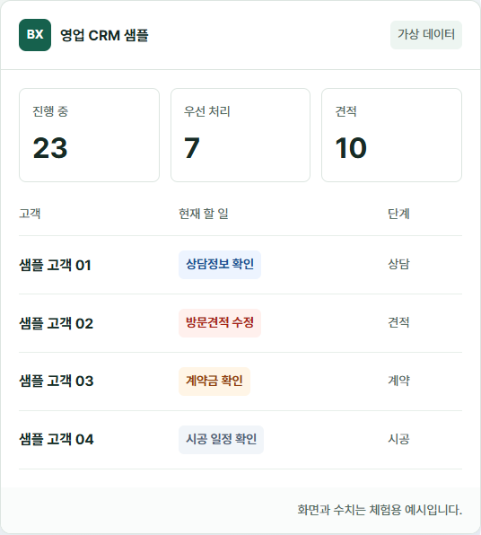
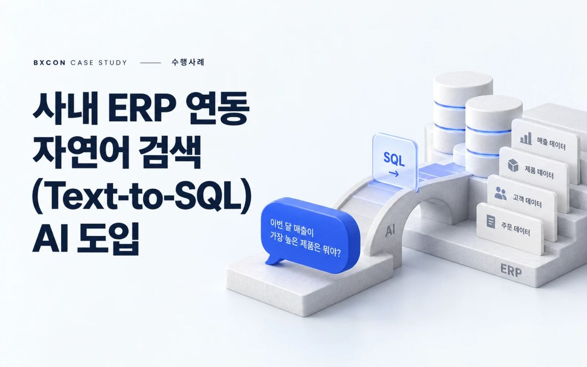

영업 업무의
디지털 전환 예시
상담부터 견적, 계약, 시공까지. 고객의 다음 할 일과 업무 이력을 연결하는 CRM을 직접 체험해 보세요.
영업 CRM 예시 보기 ↗실제 고객 정보가 없는 가상 데이터 샘플입니다.

성과가 나는 영업조직은
교육 전에 병목을 먼저 봅니다.
BX컨설팅 세일즈 교육은 진단, 문제유형 분류, 추천 과정, 상세 상담으로 이어지는 흐름을 통해 영업조직의 현재 과제에 맞는 교육 로드맵을 설계합니다.
- 01
세일즈 진단
고객 발굴, 상담, 제안, 클로징, 재구매 관리까지 현재 병목을 먼저 확인합니다.
- 02
문제유형 매칭
조직의 약한 구간에 따라 리드 부족형, 상담 품질 부족형, 제안 병목형 등으로 분류합니다.
- 03
추천 과정 설계
컨설팅 세일즈, 고객 상담 스킬, B2B 제안서 작성 등 필요한 교육 순서를 제안합니다.
- 04
현업 적용 상담
무료 방문 상담을 통해 교육 대상, 일정, 산출물, 적용 과제를 구체화합니다.
수행사례
전체 수행사례 보기 ↗
FM 서비스 품질 모니터링 조사 및 고객만족도 조사
리서치 관점에서 대규모 건물관리 점검 방법 부재 문제를 해결하기 위해 구조화된 점검표에 의한 모니터링 조사 등을 수행한 BXCON 포트폴리오 사례입니다.

고객사 고유 분석을 반영한 커스텀 AI 챗봇 제작
AI 관점에서 모바일앱(MTS) 사용자 경험 강화를 위한 혁신적인 접근 방안 부재 문제를 해결하기 위해 RFP 이전부터 기술적 요구사항 정리 및 제안 등을 수행한 BXCON 포트폴리오 사례입니다.

사내 ERP 연동 자연어 검색(Text-to-SQL) AI 도입
AI 관점에서 사내 ERP 시스템에서 고객 및 제품 정보를 검색하고 활용하는 데 많은 시간과 노력 소요 문제를 해결하기 위해 사내 ERP의 고객 및 제품 정보를 자연어로 즉시 검색할 수 있는 데이터 분석 기반 AI 도입 등을 수행한 BXCON 포트폴리오 사례입니다.
인사이트
챗봇의 함정: 고객 등급이 높을수록 챗봇에 대한 거부감도 커진다
상위 고객일수록 챗봇의 획일적 응대에 민감하므로, 고객 가치에 따른 차별화된 서비스 설계가 필요합니다.
- 기획조사기획조사 전체 보기 ↗
‘조용한 사직’의 두 얼굴, ‘선 긋기’ 아닌 ‘적당히’가 이탈 신호
전국 직장인 3,000명 조사에서 조용한 사직은 경계 설정과 노력 철회로 나뉘었다. 경계 설정은 직무만족·성과와 함께 높아졌고, 노력 철회 상위 집단의 절반은 이직을 고려했다.
- 보도자료보도자료 전체 보기 ↗
가족 같은 회사는 그만… 직장인은 ‘프로 팀’을 원한다
직장인이 선호하는 조직 문화가 ‘가족 같은 회사’에서 ‘프로 팀’으로 이동하고 있는 것으로 나타났다. 상사와의 관계보다 동료와의 협업, 과도한 친밀감보다 역할과 성과 중심의 관계를 중시하는 경향이 뚜렷했다.


서울·대전·부산을 거점으로,
전국 어디서나 가까이 빠르게
서울 본사와 대전·부산 지사가 하나의 실행 네트워크로 움직입니다. 수도권부터 충청권, 영남권까지 현장 진단과 실행 지원을 빠르게 이어갑니다.
Business hubs
Field coverage
Execution support
- 서울전략 총괄
- 대전중부권 업무지원
- 부산남부권 실행지원
실제 프로젝트로 축적한
고객 레퍼런스
CONTACT US
지금 풀어야 할 과제를 함께 구조화하고 실행 가능한 계획으로 바꿔보세요.
NEWSLETTER
실무에 바로 연결되는 인사이트를 메일로 편하게 받아보세요.